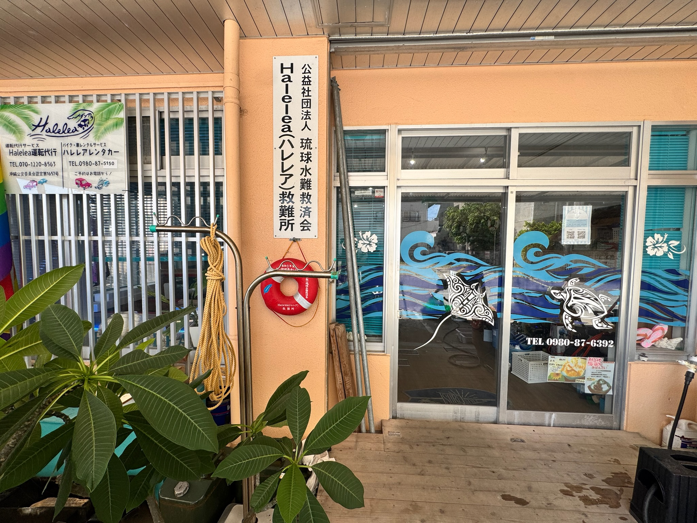

ハレレアレンタカーへのアクセス
石垣空港から約25分。 市街地や離島ターミナルからもアクセスしやすい場所にございます。 ご予約のお客様は石垣空港への有料送迎も承っております（事前予約制）。

店舗情報
石垣島中心部に位置し、市街地や観光地へのアクセスも便利です。
店舗情報
| 店舗名 | ハレレアレンタカー |
|---|---|
| 住所 |
〒907-0013 沖縄県石垣市浜崎町2丁目2-14 |
| 電話番号 | 070-1220-5694 |
| 営業時間 | 8:00〜17:00 |
| 定休日 | 不定休 |
| お支払い | 現金・各種クレジットカード・PayPay・楽天ペイ・au PAY・QUICPay・交通系ICカード |
Googleマップ
アクセス方法
主要施設から店舗までのアクセスをご案内します。
✈ 石垣空港から
車で約25分です。 ご予約のお客様は石垣空港への有料送迎をご利用いただけます。 送迎は事前予約制となりますので、ご予約時にご相談ください。
⛴ 離島ターミナルから
車で約5分です。 離島観光後のお受け取りや返却にも便利な立地です。 有料送迎も対応しております。
🚗 市街地から
ユーグレナモールや730交差点から車で約5分。 ホテルからもアクセスしやすい場所にございます。
有料送迎について
石垣空港・離島ターミナルへの有料送迎を行っております。 ご利用をご希望のお客様は、ご予約時にお知らせください。 当日の交通状況や予約状況により対応できない場合がございます。
周辺施設のご案内
店舗周辺には観光やドライブ前後に便利な施設があります。
⛽ ガソリンスタンド
返却前の給油に便利なガソリンスタンドが店舗周辺にございます。 返却前は満タン給油をお願いいたします。 ※三輪トライクは満タン返却不要です。
🏪 コンビニ
店舗近くにはコンビニエンスストアがあり、ドライブ前のお買い物にも便利です。
🍴 飲食店
市街地まで近く、石垣牛・八重山そば・海鮮料理など人気のお店へもアクセスしやすい立地です。
アクセスについてよくあるご質問
店舗へのアクセスや送迎についてのご質問です。
駐車場はありますか？
はい。お客様用駐車スペースをご用意しております。
店舗までタクシーで行けますか？
はい。石垣空港・市街地・離島ターミナルからタクシーをご利用いただけます。
石垣空港からどれくらいかかりますか？
通常は車で約25分です。時間帯や交通状況により前後する場合があります。
離島ターミナルから歩いて行けますか？
徒歩では距離がありますので、お車・タクシーまたは送迎サービスのご利用をおすすめしております。
送迎は予約が必要ですか？
はい。有料送迎は事前予約制となりますので、ご予約時にお申し付けください。
お気軽にお問い合わせください
アクセス方法や送迎についてご不明な点がございましたら、お気軽にLINEまたはお電話でお問い合わせください。